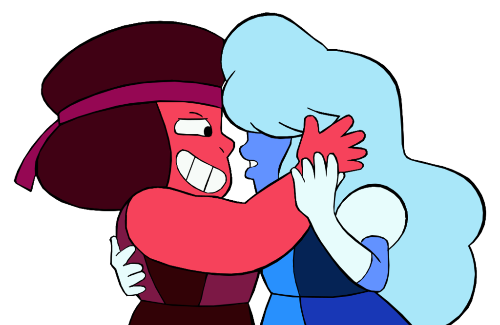

Ruby and Sapphire
Sapphire is an aristocratic seeress while Ruby is a foot soldier in Gem society who served as one of Sapphire's three ruby bodyguards. When visiting Blue Diamond, Sapphire predicted that the rebellion would end with her demise once two of her rubies and four other Gems are defeated, but Ruby intervened before the former part of the prophecy occurred and the two accidentally fused in the process. This not only negates Sapphire's prophecy that Rose Quartz would be captured at that moment, but the fusion itself is a violation of Gem culture with Ruby to be executed for the act, though Sapphire saves her by getting themselves safely onto Earth, where they form a romantic bond and consummate it by re-fusing into Garnet indefinitely prior to joining the Crystal Gems. Ruby's gemstone is a ruby embedded on her left hand, and Sapphire's gemstone is a blue sapphire embedded on her right hand. Separately, having contrasting personalities, the two Gems have different abilities which are utilized by Garnet: the hot-headed Ruby has thermokinsesis, where she can generate heat, while using a small gauntlet as her weapon. The cool and collective Sapphire, revealed to have a single eye under her bangs, has cryokinesis, being able to freeze her surroundings and drastically decrease the temperature around her, and the ability to use "future vision" to see possible futures. She is also capable of sprinting at an unnatural speed as seen in their escape from Blue Diamond as well as when they had escaped from Homeworld Gems Peridot and Jasper with the help of Steven. Due to the strength of their love maintaining their fused state, Garnet would rarely separate into Ruby and Sapphire willingly.